Calendar
The calendar below was created using elements from the Skote (Angular) framework, with adaptations to meet the needs of the workflow. It is a calendar designed for team planning and scheduling. Team leaders can see which employees will be unavailable on a specific date due to holidays, sick leave, absences, and other reasons. This allows them to better plan the scope and activities of the team.
When hovering over an entry, a pop-up window displays information about the employee, as well as the date, time, and reason for the absence.
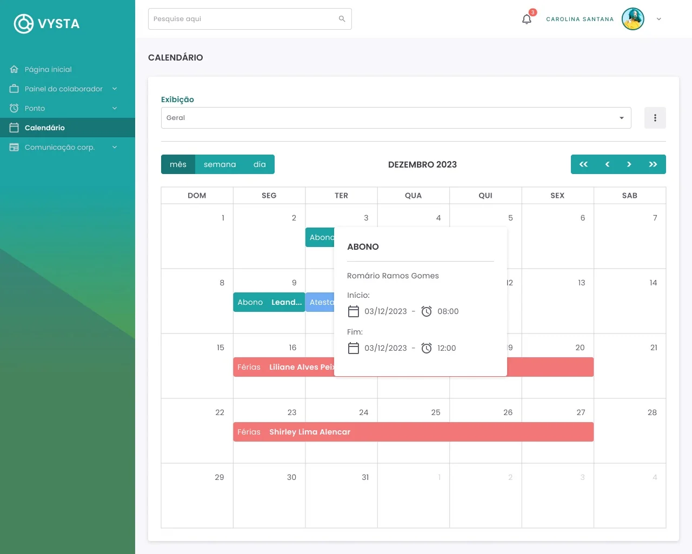
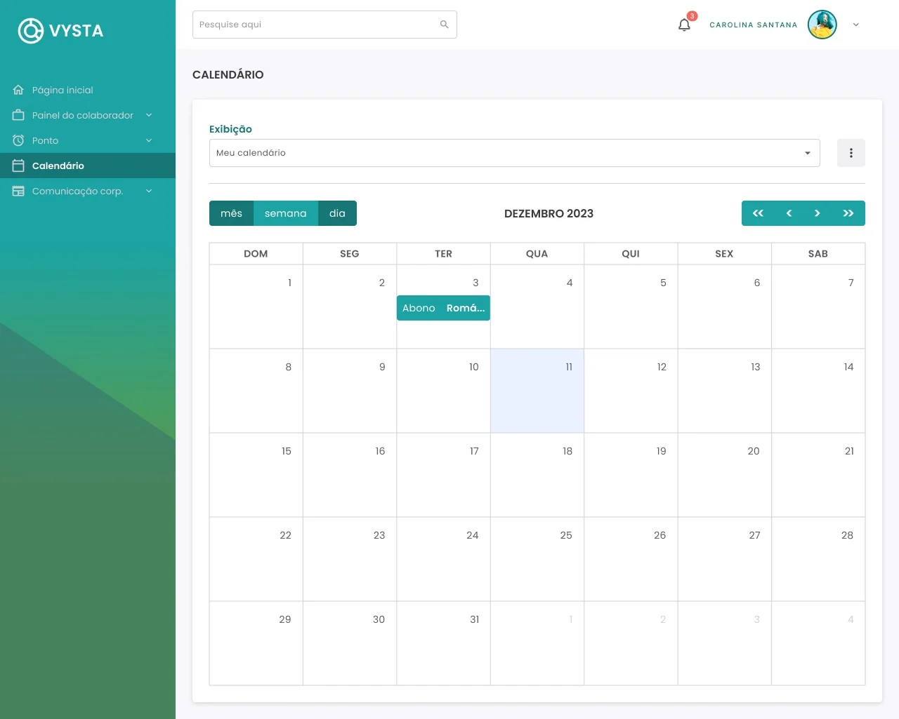
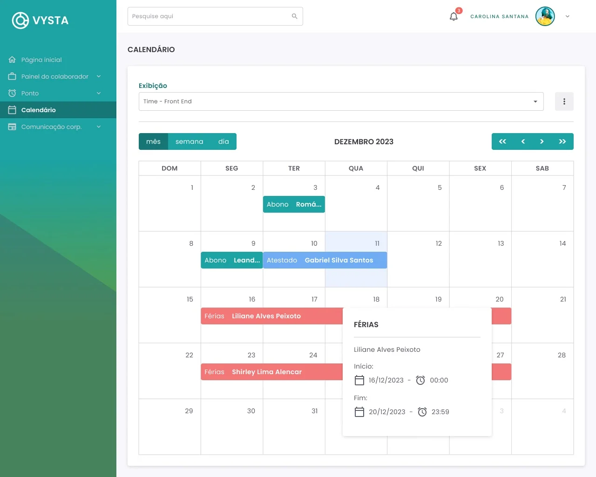
Other viewing options are also available. You can switch between weekly and daily views, allowing you to see the start times of absences. These options are useful for planning on a smaller or more specific scale.
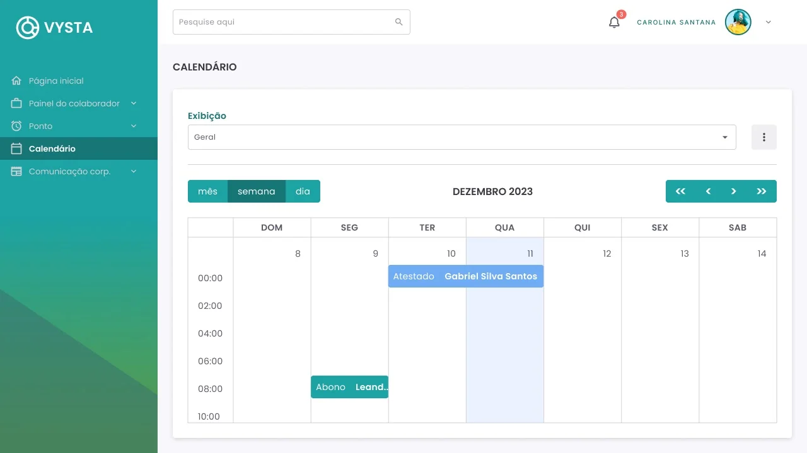
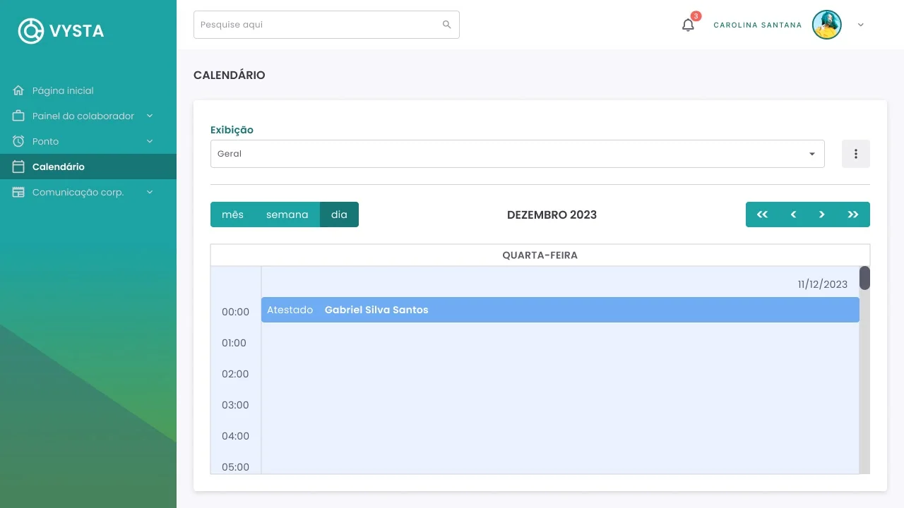
Click here to navigate the Figma prototype.
The mobile version follows the same core concept, but due to the smaller screen size, the monthly view only indicates which days contain entries without displaying their details. Users need to tap the desired day to view the information associated with each entry. Another option for viewing entries, similar to the desktop version, is the weekly view.
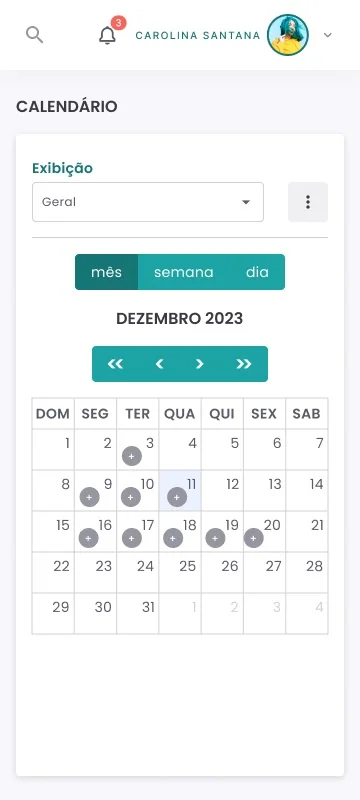
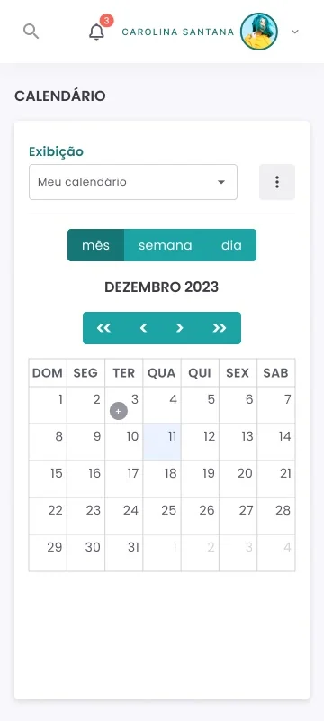
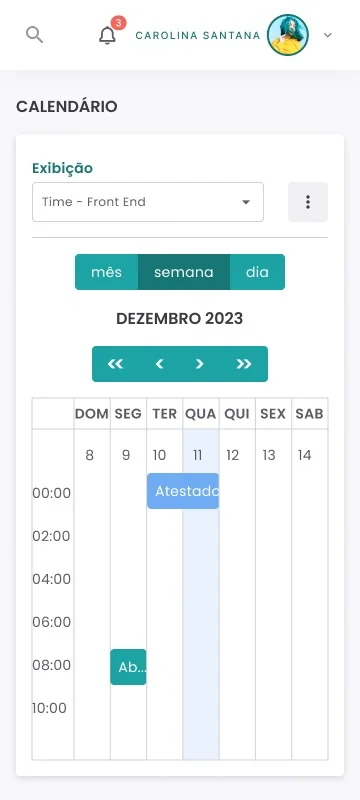
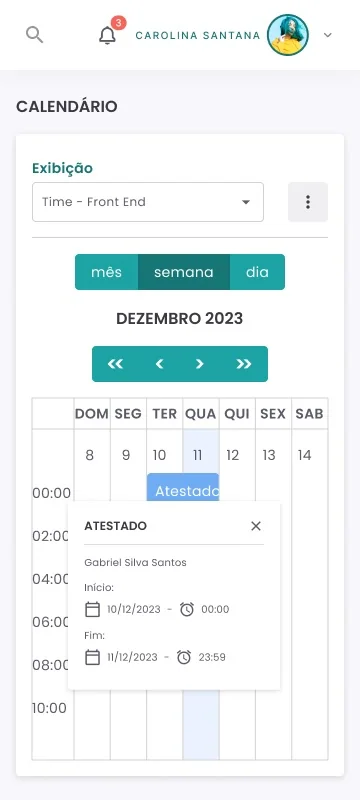
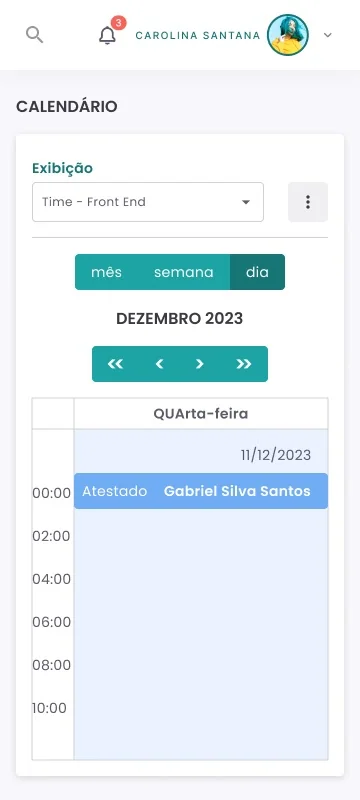
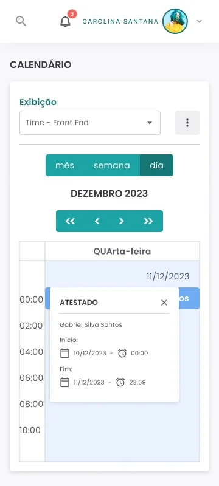